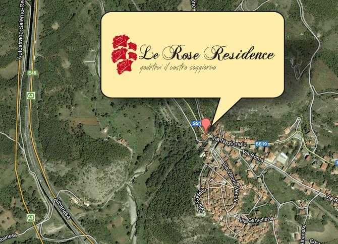

DOVE SIAMO LOCALIZZATI
Le Rose Residence - Casa Vacanze - è ubicato nel Comune di Casalbuono (SA), a sua volta localizzato a SUD del Vallo di Diano con un estensione territoriale di circa 3.445 Ha con una popolazione di circa 1.600 abitanti e densità di popolazione di circa 50 ab/kmq, e altitudine compresa tra 518 e 1.109 mt sul livello del mare.Il centro urbano ricade in zona con altitudine superiore a mt. 600 s.l.m. Il piccolo centro è inoltre collegato direttamente con l'autostrada Salerno - Reggio Calabria attraverso la S.S. n. 19 delle Calabrie e dista pochi minuti dagli svincoli di Padula - Buonabitacolo e Lagonegro Nord.
Le Rose Residence, ricade in una zona montana tranquilla con spettacolari vedute a verde verso valle ed è ubicato a Nord del centro abitato ed è servito direttamente dalla S.S. n.19 che si collega con la vicina autostrada Salerno - Reggio Calabria. Inoltre, grazie alla recente ultimazione della superstrada di collegamento tra il comprensorio del Vallo di Diano e il Golfo di Policastro, è possibile raggiungere le spiagge del vicino Golfo di Policastro in 20/30 minuti di percorrenza stradale.
COME RAGGIUNGERCI
Per chi proviene da Nord
- Prendere l'autostrada A3 Salerno - Reggio Calabria
- Proseguire in direzione Reggio Calabria
- Prendere l'uscita Buonabitacolo - Padula direzione Buonabitacolo
- Svoltare a sinistra e imboccare Via Nazionale/SS19. Continua a seguire la SS19
- Dopo circa 10 km si giunge a destinazione (sulla destra) in Via Nazionale,10 - 84030 Casalbuono SA
Per chi proviene da Sud
- Prendere l'autostrada A3 Salerno - Reggio Calabria
- Proseguire in direzione Salerno
- Prendere l'uscita Lagonegro Nord verso Maratea/Praia a Mare
- Entrare in Strada Statale Numero 585 del Fondo Valle Noce/SS585
- Svoltare a destra e imboccare SS19 (indicazioni per Fortino/Casalbuono)
- Mantenere la destra al bivio.Continuare a seguire la SS19
- Dopo circa 11 km si giunge a destinazione (sulla sinistra) in Via Nazionale,10 - 84030 Casalbuono SA